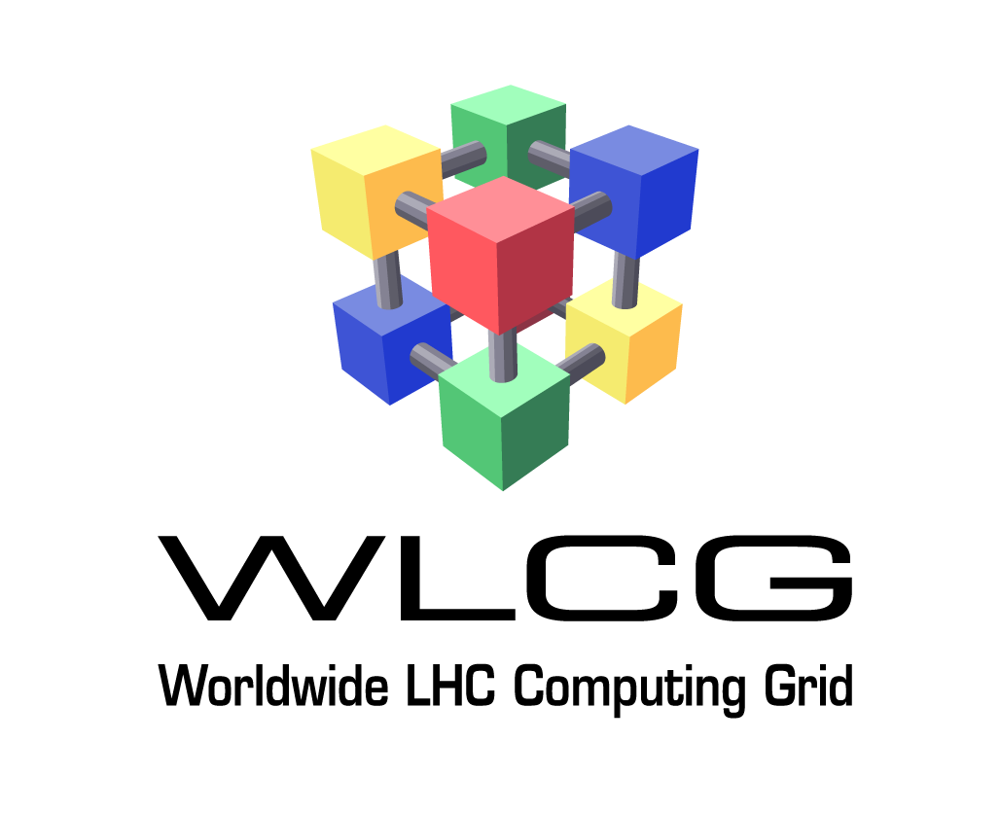
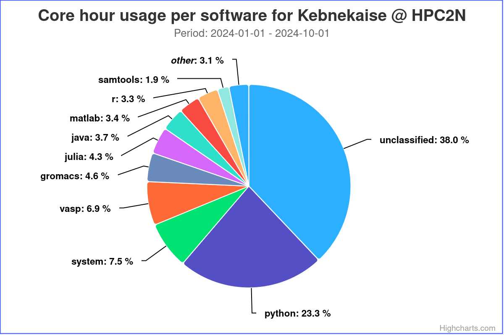
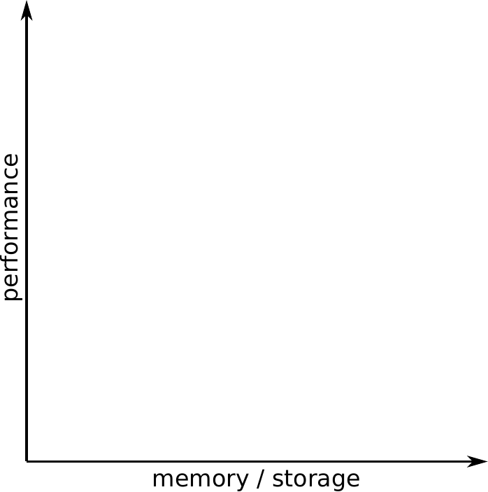
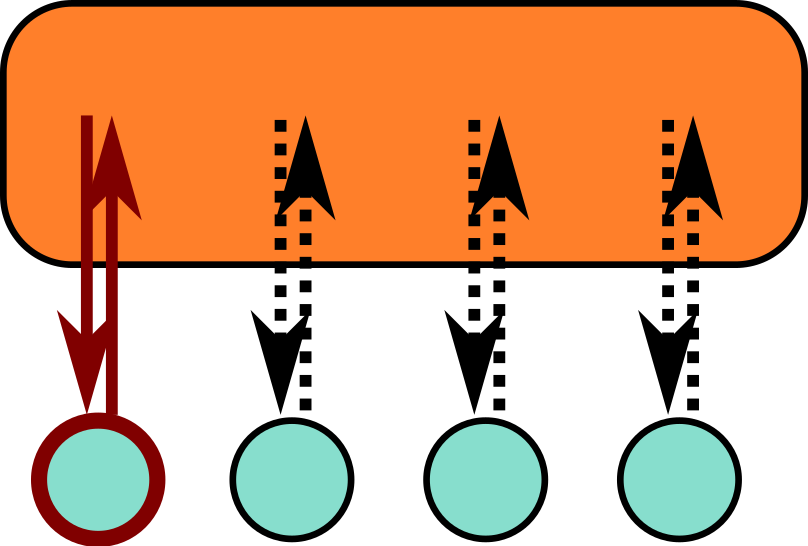
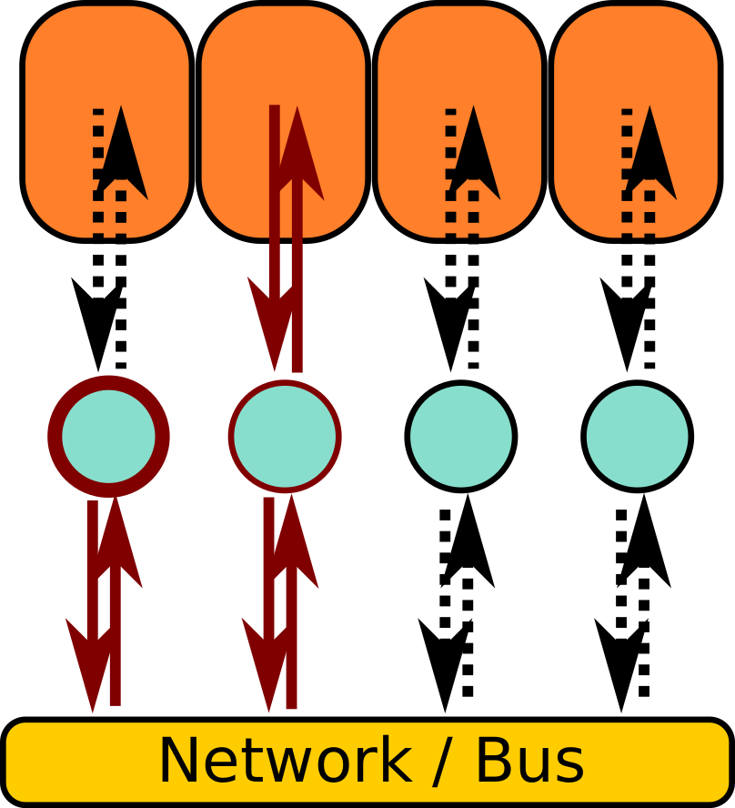
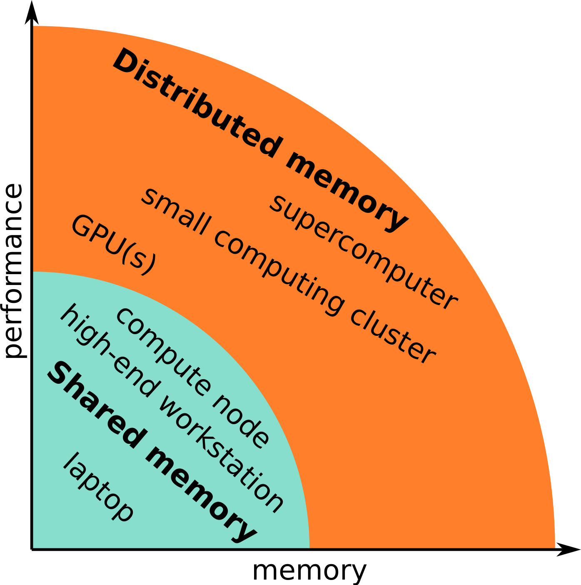

Introduction to HPC2N, Kebnekaise and HPC¶

- Welcome page and syllabus: https://hpc2n.github.io/intro-linux/index.html
- Also link at the House symbol at the top of the page.
HPC2N¶
Note
High Performance Computing Center North (HPC2N) is
- a competence center for Scientific and Parallel Computing
- part of National Academic Infrastructure for Supercomputing in Sweden (NAISS)
HPC2N provides state-of-the-art resources and expertise:
- HPC resources and e-Infrastructure
- Large-scale storage facilities (Project storage, WLCG storage (dCache, Tape))
- Grid and cloud computing (WLCG NT1, Swedish Science Cloud)
- National Data Science Node in ”Epidemiology and Biology of Infections” (Data-Driven Life Science - DDLS)
- Training and support for our users
- A wide range of scientific software, applications, libraries, and compilers available
Primary objective
To raise the national and local level of HPC competence and transfer HPC knowledge and technology to new users in academia and industry.
HPC2N partners¶
HPC2N is hosted by:

Partners:


HPC2N funding and collaborations¶
Funded mainly by Umeå University, with contributions from the other HPC2N partners.
Involved in several projects and collaborations:



HPC2N training and other services¶
- User support (primary, advanced, dedicated)
- Research group meetings @ UmU
- Also at the partner sites
- Online “HPC2N fika”
- Online intro seminars
- User training and education program (many together with NAISS)
- 0.5 – 5 days; presentations and ready-to-run exercises
- intro courses: our system, Linux, R, Python, Julia, Matlab, Git
- intermediate courses
-
- Parallel programming and tools (OpenMP, MPI, debugging, perf. analyzers, Matlab, R, MD simulation, ML, GPU, …)
- Courses this spring
- NAISS intro week, 2-6 January 2026
- Command Line 101
- Connecting and File Transfer
- Selecting software modules
- Running jobs on clusters
- Linux Command Line 201
- Running AI/ML workloads on NAISS systems
- Handling sensitive data at NAISS
- Introduction to Python and Using Python in an HPC environment, 20 + 22-24 April 2026
- Linux Command Line 101, 11 May 2026
- NAISS intro day
- shortened version of
- Connecting and File Transfer
- Selecting software modules
- Running jobs on clusters
- Running AI/ML workloads on NAISS systems (possibly)
- shortened version of
- Linux Command Line 201, 1-2 June 2026
- Updated list: https://www.hpc2n.umu.se/events/courses
- NAISS intro week, 2-6 January 2026
- Workshops and seminars
- NGSSC / SeSE & university courses
HPC2N personnel¶
Management:
- Paolo Bientinesi, director
- Björn Torkelsson, deputy director
- Lena Hellman, administrator
Application experts:
- Jerry Eriksson
- Pedro Ojeda May
- Birgitte Brydsö
- Åke Sandgren
Others:
- Mikael Rännar (WLCG coord)
- Research Engineers under DDLS, HPC2N/SciLifeLab
- Paul Dulaud, System Developer, IT
- Abdullah Aziz, Data Engineer
- Nalina Hamsaiyni Venkatesh, Data Steward
System and support:
- Birgitte Brydsö
- Niklas Edmundsson (Tape coord)
- My Karlsson
- Nathan Lövsund
- Roger Oscarsson
- Ali Rahmanian
- Åke Sandgren
- Mattias Wadenstein (NeIC, Tier1)
HPC2N application experts¶
- HPC2N provides advanced and dedicated support in the form of Application Experts (AEs):
- Jerry Eriksson: Profiling, Machine learning (DNN), MPI, OpenMP, OpenACC
- Pedro Ojeda May: Molecular dynamics, Profiling, QM/MM, NAMD, Amber, Gromacs, GAUSSIAN, R, Python
- Åke Sandgren: General high level programming assistance, VASP, Gromacs, Amber
- Birgitte Brydsö: General HPC, R, Python
- Contact through regular support
HPC2N users by discipline¶
- Users from several scientific disciplines:
- Biosciences and medicine
- Chemistry
- Computing science
- Engineering
- Materials science
- Mathematics and statistics
- Physics including space physics
- ML, DL, and other AI
HPC2N users by discipline, largest users¶
- Users from several scientific disciplines:
- Biosciences and medicine
- Chemistry
- Computing science
- Engineering
- Materials science
- Mathematics and statistics
- Physics including space physics
- Machine learning and artificial intelligence (several new projects)
HPC2N users by software¶

Kebnekaise¶
The current supercomputer at HPC2N. It is a very heterogeneous system.
- Named after a massif (contains some of Sweden’s highest mountain peaks)
-
Kebnekaise was
- delivered by Lenovo and
- installed during the summer 2016
- Opened up for general availability on November 7, 2016
- In 2018, Kebnekaise was extended with
- 52 Intel Xeon Gold 6132 (Skylake) nodes, as well as
- 10 NVidian V100 (Volta) GPU nodes
- In 2023, Kebnekaise was extended with
- 2 dual NVIDIA A100 GPU nodes
- one many-core AMD Zen3 CPU node
-
In 2024 Kebnekaise was extended with
- 2 Dual socket GPU-nodes: Lenovo ThinkSystem SR675 V3
- 2 x AMD EPYC 9454 48C 290W 2.75GHz Processor
- 768GB [24x 32GB TruDDR5 4800MHz RDIMM-A]
- 1 x 3.84TB Read Intensive NVMe PCIe 4.0 x4 HS SSD
- 1 x NVIDIA H100 SXM5 700W 80G HBM3 GPU Board
- 10 dual-socket GPU-nodes: ThinkSystem SR665 V3
- 2 x AMD EPYC 9254 24C 200W 2.9GHz Processor
- 384GB [24x 16GB TruDDR5 4800MHz RDIMM-A]
- 1 x 1.92TB Read Intensive NVMe PCIe 5.0 x4 HS SSD
- 2 x NVIDIA L40S 48GB PCIe Gen4 Passive GPU
- 8 dual-socket CPU only: ThinkSystem SR645 V3
- 2 x AMD EPYC 9754 128C 360W 2.25GHz Processor
- 768GB [24x 32GB TruDDR5 4800MHz RDIMM-A]
- 1 x 1 3.84TB Read Intensive NVMe PCIe 4.0 x4 HS SSD
- 2 Dual socket GPU-nodes: Lenovo ThinkSystem SR675 V3
Kebnekaise will be continuosly upgraded, as old hardware gets retired.
Current hardware in Kebnekaise¶
Kebnekaise have CPU-only, GPU enabled and large memory nodes.
The CPU-only nodes are:
- 2 x 14 core Intel skylake
- 6785 MB memory / core
- 52 nodes
- Total of 87 TFlops/s
- 2 x 64 core AMD zen3
- 8020 MB / core
- 1 node
- Total of 11 TFlops/s
- 2 x 128 core AMD zen4
- 2516 MB / core
- 8 nodes
- Total of 216 TFlops/s
The GPU enabled nodes are:
- 2 x 14 core Intel skylake
- 6785 MB memory / core
- 2 x Nvidia V100
- 10 nodes
- Total of 75 TFlops/s
- 2 x 24 core AMD zen3
- 10600 MB / core
- 2 x Nvidia A100
- 2 nodes
- 2 x 24 core AMD zen3
- 10600 MB / core
- 2 x AMD MI100
- 1 node
- 2 x 24 core AMD zen4
- 6630 MB / core
- 2 x Nvidia A6000
- 1 node
- 2 x 24 core AMD zen4
- 6630 MB / core
- 2 x Nvidia L40s
- 10 nodes
- 2 x 48 core AMD zen4
- 6630 MB / core
- 4 x Nvidia H100 SXM5
- 2 nodes
- 2 x 32 core AMD zen4
- 11968 MB / core
- 6 x Nvidia L40s
- 2 nodes
- Can only use 10 cores/GPU
- 2 x 32 core AMD zen4
- 11968 MB / core
- 8 x Nvidia A40
- 1 nodes
The large memory nodes are:
- 4 x 18 core Intel broadwell
- 41666 MB memory / core
- 8 nodes
- Total of 13.6 TFlops/s for all these nodes
GPUs can have different types of cores:
- CUDA cores: General-purpose cores for a variety of parallel computing tasks. Not as efficicent as specizalized cores. CUDA cores is only on NVidia. The (mostly) equivalent is called stream processors on AMD.
- Tensor cores: Made for matrix multiplications. Good for deep learning and AI workloads involving large matrix operations. Can be used for general-purpose as well, but less efficient for this. Tensor cores is the NVidia name. AMD has a somewhat equivalent core type called matrix cores.
- RT (ray tracing) cores: Cores that are optimized for tasks involving ray tracing, like rendering images or video.
| GPU Type | CUDA cores / stream processors | TENSOR cores / matrix cores | RT cores |
|---|---|---|---|
| A40 | 10752 | 336 | |
| V100 | 5120 | 640 | |
| A100 | 6912 | 432 | |
| MI100 | 7680 | 480 | |
| A6000 | 10752 | 386 | |
| L40S | 18176 | 568 | 142 |
| H100 | 16896 | 528 |
NOTE that just like you cannot really compare CPU cores directly (speed etc.) you also cannot just compare CUDA/TENSOR/RT etc. cores directly (more efficient design, faster, etc.)
Kebnekaise - HPC2N storage¶
Basically four types of storage are available at HPC2N:
- Home directory
/home/X/Xyz,$HOME,~- 25 GB, user owned
- Project storage
/proj/nobackup/abc- Shared among project members
- Local scratch space
$SNIC_TMP- SSD (170GB), per job, per node, “volatile”
- Tape Storage
- Backup
- Long term storage
Also
- disk based (dCache)
- Research Data Storage Infrastructure, for active research data and operated by NAISS, WLCG
Kebnekaise - projects¶
Projects
To use Kebnekaise, you must be a member of a project.
- Previously, there were both compute and storage projects, but they have now been merged so there is only one type of projects.
- A project has a certain number of core hours allocated for it per month
- A regular CPU core cost 1 core hour per hour, other resources (e.g., GPUs) cost more
- Not a hard limit but projects that go over the allocation get lower priority
- A project contains a certain amount of default storage. If more storage is required, you have to ask for that (and give arguments for why you need it, etc.).
Note
As Kebnekaise is a local cluster, you need to be affiliated with UmU, IRF, SLU, Miun, or LTU to use it.
Projects are applied for through SUPR (https://supr.naiss.se).
I will cover more details in a later section, where we go more into detail about HPC2N and Kebnekaise.
HPC¶
What is HPC?
High Performance Computing (definition)
“High Performance Computing most generally refers to the practice of aggregating computing power in a way that delivers much higher performance than one could get out of a typical desktop computer or workstation in order to solve large problems in science, engineering, or business.”
High Performance Computing - opening the definition¶
Aggregating computing power¶
- 95 nodes totalling 4792 CPU cores and 84 GPUs (totalling 1055744 CUDA cores, 43076 TENSOR cores + 960 matrix cores, 4544 RT cores)
- Compared to 4-8 cores in a common modern laptop + maybe 1 GPU
Higher performance¶
- More than 527,000,000,000,000 arithmetical operations per second (527 trillion (billion)) in the CPU cores
- Compared to 200,000,000,000 Flops in a modern laptop (200 billion (milliard)
Solve large problems¶
- When does a problem become large enough for HPC?
- Are there other reasons for using HPC resources? (Memory, software, support, etc.)
High Performance Computing - large problems¶
A problem can be large for two main reasons:
- Execution time: The time required to form a solution to the problem is very long
- Memory / storage use: The solution of the problem requires a lot of memory and/or storage
The former can be remedied by increasing the performance
- More cores, more nodes, GPUs, …
The latter by adding more memory / storage
- More memory per node (including large memory nodes), more nodes, …
- Kebnekaise: 128GB - 192GB, 384GB, 512GB, 768GB, 3TB
- Large storage solutions, …
High Performance Computing - what counts as HPC¶

High Performance Computing - other reasons¶
- Specialized (expensive) hardware
- GPUs, including those optimized for AI
- Kebnekaise has V100, A100, A40, MI100, A6000, L40S, H100
- High-end CPUs (AVX-512 etc) and ECC memory
- GPUs, including those optimized for AI
- Software
- HPC2N holds licenses for several softwares
- Software is pre-configured and ready-to-use
- Support and documentation
High Performance Computing - memory models¶
Two memory models are relevant for HPC:
- Shared memory: Single memory space for all data.

- Everyone can access the same data
- Straightforward to use
- Distributed memory: Multiple distinct memory spaces.

- Everyone has direct access only to the local data
- Requires communication

High Performance Computing - programming models¶
The programming model changes when we aim for extra performance and/or memory:
- Single-core: Matlab, Python, C, Fortran, …
- Single stream of operations
- Multi-core: Vectorized Matlab, pthreads, OpenMP
- Multiple streams of operations
- Work distribution, coordination (synchronization, etc), …
- Distributed memory: MPI, …
- Multiple streams of operations
- Work distribution, coordination (synchronization, etc), …
- Data distribution and communication
- GPUs: CUDA, OpenCL, OpenACC, OpenMP, …
- Many lightweight streams of operations
- Work distribution, coordination (synchronization, etc), …
- Data distribution across memory spaces and movement
High Performance Computing - software¶
Complexity grows when we aim for extra performance and/or memory/storage:
- Single-core: LAPACK, …
- Load correct toolchain etc
- Multi-core: LAPACK + parallel BLAS, …
- Load correct toolchain etc
- Allocate correct number of cores, configure software to use correct number of cores, …
- Distributed memory}: ScaLAPACK, …
- Load correct toolchain etc
- Allocate correct number of nodes and cores, configure software to use correct number of nodes and cores, …
- Data distribution, storage, …
- GPUs: MAGMA, TensorFlow, …
- Load correct toolchain etc
- Allocate correct number of cores and GPUs, configure software to use correct number of cores and GPUs, …